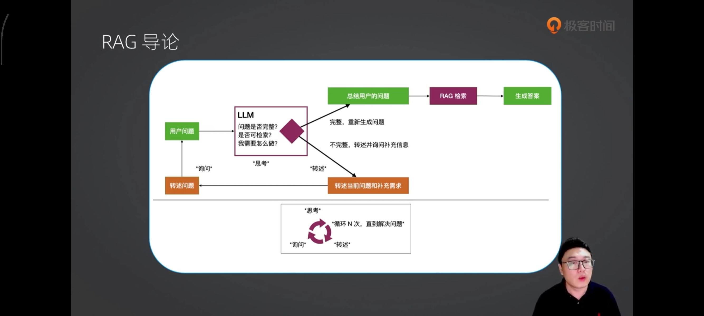
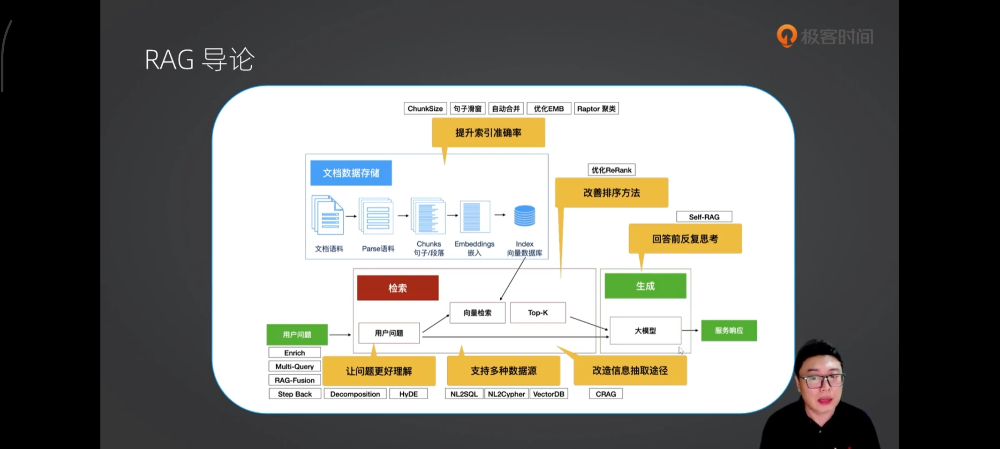
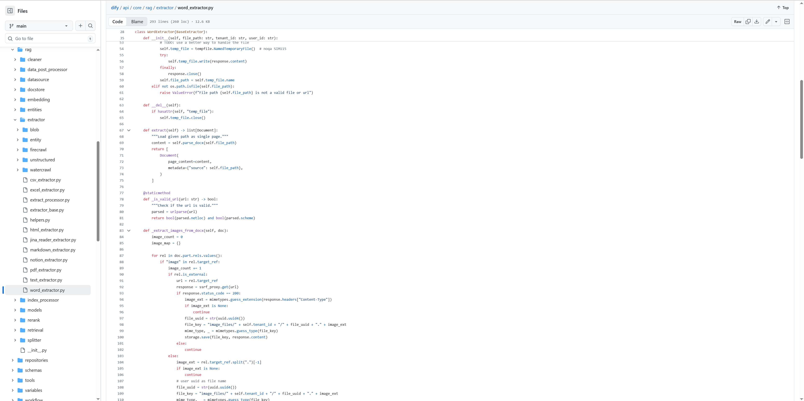
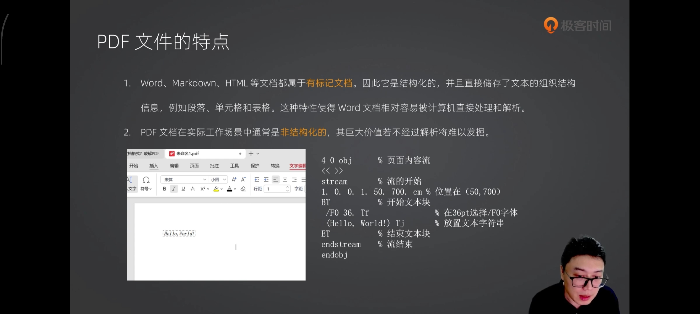
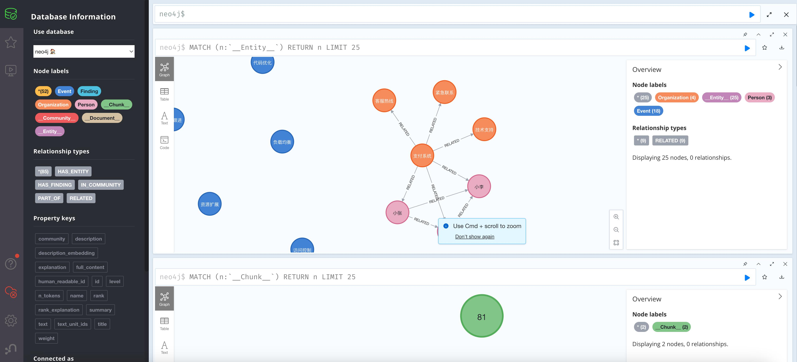

RAG 是什么
Retrieval -> Augmentation -> Generation
检索 -> 增强 -> 生成
RAG 全称是“Retrieval-Augmented Generation”，即 “检索增强的生成”。是一种结合了检索和生成的技术，用于增强语言模型的能力。RAG 的核心思想是利用外部知识库或数据集来辅助模型的生成过程。它通过以下两个步骤来生成更准确和相关的回答：
- 检索：从外部知识库或文档中检索与输入问题相关的信息。
- 生成：利用检索到的信息，生成更精确和上下文相关的回答。
通俗地讲，就是用户问 AI 一个问题，然后 AI 马上去知识库（类似于翻书、翻词典）找到对应的词条，然后根据这个词条回答用户。
看过其他文章的同学可能会问，为什么这里少了两个阶段：
- 编码阶段：检索到的文档或文本片段会与原始查询一起被编码成高维向量（多维数组的专业说法，只不过这里的多维多到几百、上千的那种）。
- 融合阶段：编码后的向量会进行融合，以生成一个综合的表示，这个表示同时包含了原始查询和检索到的相关信息。
的确很多 RAG 应用（包括这门课后面的实战案例）是包含以上两个步骤的，也就是说会包含四个阶段：
- 检索阶段
- 编码阶段
- 融合阶段
- 生成阶段
但是编码和融合阶段并不是 RAG 应用必需的，检索和生成阶段才是 RAG 应用必需的。
根据奥卡姆剃刀原则，如无必要，勿增实体。我们在规划设计一个 RAG 应用的时候，也尽量勿增实体，如果不需要添加编码和融合阶段，那我们就不添加。
RAG-索引

步骤：
-
拆分：按一定规则把文档拆分成小块，借助文档拆分器实现
- 加载：加载不同格式的文档，借助文档加载器实现
-
存储：对文档块进行向量化，并存储在向量数据库中
RAG-检索和生成

步骤：
- 检索：根据用户的输入，借助检索器从向量数据库中检索出相关的块
- 生成：LLM 使用包含问题答案的块进行问答


在检索增强生成（RAG）技术中，文档格式的统一和内容解析是确保高质量输出的关键环节。
RAG 需要处理来自多种来源的文档，因此有效地解析这些文档是其成功应用的基础。
识别难度：
- 票据 🌟🌟
- 扫描件 🌟🌟🌟
- 手写 🌟🌟🌟🌟
- 文件里嵌入表格和数学公式 🌟🌟🌟🌟🌟
对AI的挑战：不仅要看懂内容，还得学习格式。
为什么要掌握多源文档格式
- 提取图片的Word、PDF等格式中的特定内容
- 增加对新格式的支持
- 避免信息丢失或误读
- 在后续检索与生成过程中提供更高质量的数据输入
- 提升信息检索效率：统一格式后，可以使用相同的索引方法（如倒排索引、向量索引）对所有文档进行处理，避免为每种格式单独开发检索逻辑，提高系统的可维护性和扩展性
解析 md 文档
# 读取 ./data/data.md 文件作为运维知识库
file_path = os.path.join('data', 'data.md')
with open(file_path, 'r', encoding='utf-8') as file:
docs_string = file.read()
# Split the document into chunks base on markdown headers.
headers_to_split_on = [
("#", "Header 1"),
("##", "Header 2"),
("###", "Header 3"),
]
text_splitter = MarkdownHeaderTextSplitter(headers_to_split_on=headers_to_split_on)
splits = text_splitter.split_text(docs_string)
print("Length of splits: " + str(len(splits)))
print(splits)
原理：
- 借助 LangChain text_splitter 对 Markdown 运维专家知识库进行分片
- 再将分片的段落进行 Embedding 向量化
RAG Embedding 核心代码
# 向量检索时会把 input Embedding 之后转成向量
from openai import OpenAI
client = OpenAI()
response = client.embeddings.create(
input="payment 服务是谁维护的？",
model="text-embedding-3-small"
)
print(response.data[0].embedding)
# 输出 1536 维向量
[0.013615109957754612, -0.03324897587299347, 0.055096786469221115, 0.008762987330555916, -0.004749380052089691, -0.0022156040649861097, -0.015192712657153606, 0.051093120127916336,
......
]
原理：
- 借助 OpenAI Embedding 模型对每个分片进行向量化，返回特定维度的向量
- Embedding 模型可选：text-embedding-3-small、text-embedding-3-large
RAG Embedding 模型选择
| 模型 | 价格 | 向量维度 | 最大输入 Token |
|---|---|---|---|
| text-embedding-3-small | 0.02/1M Token | 1536 | 8191 |
| text-embedding-3-large | 0.13/1M Token | 3072 | 8191 |
| text-embedding-ada-002 | 0.1/1K Token | 1536 | 8191 |
基础概念
最基础的两个概念：对话模式和返回结构化数据
三个重要概念——元数据、文本摘要、机器翻译
三个重要概念：向量与嵌入模型、向量数据库、通过相似度来检索知识
对话模式
用户与 AI 进行对话
用户、AI 与系统
三种角色：用户（User）、助手（assistant）、系统（system）
系统消息是可选的。目前除了 OpenAI 之外，很多大模型都不支持系统这一角色。
记忆
AI 的记忆是有上限的，不同的大模型甚至同一个大模型在不同版本所支持的记忆上限是不同的，但是有一点是肯定的，就是记忆是有上限的，区别只是上限有多高而已。就像天才和普通人一样，都是会遗忘，只不过天才能够记住的东西更多而已。
RAG 向量检索原理
pip install langchain
pip install langchain-openai
pip install langchain-community
计算距离的几个方法。
class EmbeddingDistance(str, Enum):
"""Embedding Distance Metric.
Attributes:
COSINE: Cosine distance metric.
EUCLIDEAN: Euclidean distance metric.
MANHATTAN: Manhattan distance metric.
CHEBYSHEV: Chebyshev distance metric.
HAMMING: Hamming distance metric.
"""
COSINE = "cosine"
EUCLIDEAN = "euclidean"
MANHATTAN = "manhattan"
CHEBYSHEV = "chebyshev"
HAMMING = "hamming"
RAG 提示语
System Prompt： 您是问答任务的助手。使用以下检索到的上下文来回答问题。如果您不知道答案，就说您不知道。最多使用三句话并保持答案简洁。 问题：{question} # 用户输入的问题 上下文：{context} # 最近似的 N 个分片 答案：
RAG 运维知识库示例
module_4/demo_7/simple_rag.ipynb
RAG 缺点
- 由于文本分片会把上下文逻辑截断，可能导致无法回答内在逻辑关联的问题
- 只能回答显式检索问题，无法回答全局性/总结性问题，例如：“谁维护的服务最多？”
解析 Word
Word 文件的特点
Word文档格式：MS Office 2007 之前为doc，之后为 docx
docx格式：.docs文件是Microsoft Word文档的Open XML格式。
Open XML格式（.docx/.xlsx/.pptx）是所有受支持版本的 Microsoft Office 的默认格式
DOCS 文档的组成部分可以主要分为以下几个类别：
- 文件对象
- 与样式相关的对象
- 文字相关对象
- 表对象
- 块对象
- 与形状相关对象
- DrawingML对象
Python-decx 模块
在DOCX文档中，主要有以下几种组成部分：
- 标题
- Page_break
- 段落
- 图片
- 节（Section）
- 表格
https://github.com/langgenius/dify/blob/main/api/core/rag/extractor/word_extractor.py

Word文件的解析逻辑
- 文字一般采用 python-docs 库直接解析
- 图片保存到指定的image_floder 目录中，并被映射到一个image_map字典中，键是图片的引用ID，值是图片的HTML格式标签
- 在处理文档内容时候，当遇到图片引用时，会从image_map中获取对应的HTML标签并插入到内容中，直接处理图片的逻辑相同。
- 最终生成的文档内容会包含文本和图片的HTML表示
解析PDF
解析PDF文件的特点
- Word、Markdown、HTML 等文档都属于有标记文档。因此它是结构化的，并且直接存储了文本的组织结构信息，例如段落、单元格和表格。这种特性使得Word文档相对容易被计算机直接处理和解析。
- PDF文档在实际工作场景中通常是非结构化的，其巨大价值若不经过解析将难以发掘。

PDF文件的解析
- Dify 是如何解析PDF的？
Dify 使用了pypdfium2 库
def parse(self, blob: Blob) -> Iterator[Document]:
"""Lazily parse the blob."""
import pypdfium2 # type: ignore
with blob.as_bytes_io() as file_path:
pdf_reader = pypdfium2.PdfDocument(file_path, autoclose=True)
try:
for page_number, page in enumerate(pdf_reader):
text_page = page.get_textpage()
content = text_page.get_text_range()
text_page.close()
page.close()
metadata = {"source": blob.source, "page": page_number}
yield Document(page_content=content, metadata=metadata)
finally:
pdf_reader.close()
- 优化解析的逻辑：通过OCR进行布局识别
- 进行表格识别：
参考代码：https://github.com/infiniflow/ragflow/tree/main/deepdoc
跨页表格对齐
问题：
- 表头重复：每一页可能都包含相同的表头。
- 行列错位：页面分割导致行或列不完整。
- 格式不一致：不同页中表格样式、排版存在差异。
- OCR 识别误差：尤其在扫描件中，文字识别错误影响结构恢复
关键技术方案
- 表格结构识别（TSR）
- 列（Column）
- 行（Row）
- 列标题（Header）
- 行标题（Row Header）
- 合并单元格（Merged Cells）
-
跨页表格合并策略
-
表头一致性检测
- 使用文本匹配或语义向量判断是否为同一张表的重复表头
-
表格位置分析（Bounding Box）
- 判断相邻页中的表格是否在文档不居中连续。
-
自动拼接与去重
- 对于相同表头的多个分页表格，按行拼接，并去除重复的表头行
-
-
结构化输出
将合并后的表格转换为结构化格式，便于下游模型理解
完整流程示例
- 步骤 1：布局预测（Layout Predict）
- 步骤 2：文档格式检测（MFD Prodict）
- 步骤 3：文档格式识别（MFR Predict）
- 步骤 4：OCR 处理：自动检测到使用 CPU 时切换为 ch_lite 语言模型
- 步骤 5：表格预测（Table Predict）
PDF 处理
MinerU 官网
https://github.com/opendatalab/mineru
本地部署方式和过程更简单，集成 Dify 容易。
RAG 切片有哪几种方式？
RAG（Retrieval-Augmented Generation）里的**切片（Chunking）**是影响召回效果的核心步骤。切得好，召回准；切不好，模型就“找不到答案”。
常见的 RAG 切片方式可以分为 6 大类：
固定长度切片（Fixed-size Chunking）
最简单粗暴的方式：
按固定 token / 字符数切分，比如：
- 每 500 tokens 一段
- 每 1000 字符一段
2️⃣ 滑动窗口切片（Sliding Window）
在固定长度基础上加“重叠（overlap）”。
例如：
- chunk_size = 500 tokens
- overlap = 100 tokens
3️⃣ 语义切片（Semantic Chunking）
基于语义边界切分，而不是固定长度。
常见方式：
- 按句子切
- 按段落切
- 根据 embedding 相似度检测语义断点
例如：
- 相邻句 embedding 相似度 < 阈值 → 切断
4️⃣ 结构化切片（Structure-based Chunking）
利用文档结构切片：
- Markdown 标题
- HTML 标签
- PDF 目录
- 代码函数 / 类
- JSON 字段
例如：
# 1. 简介
作为一个 chunk
## 1.1 背景
作为一个 chunk
5️⃣ 递归切片（Recursive Chunking）
常见于 LangChain 的 RecursiveCharacterTextSplitter 思路：
切分优先级：
- 先按段落分
- 不够小再按句子分
- 还不够再按字符分
工业项目中非常常见。
6️⃣ 基于问题优化切片（Query-aware Chunking）
高级玩法 🔥
根据用户问题动态切片。
| 方法 | 简单 | 精准 | 工程复杂度 | 推荐度 |
|---|---|---|---|---|
| 固定长度 | ⭐⭐⭐⭐ | ⭐⭐ | ⭐ | ⭐⭐ |
| 滑动窗口 | ⭐⭐⭐ | ⭐⭐⭐ | ⭐⭐ | ⭐⭐⭐⭐ |
| 语义切片 | ⭐⭐ | ⭐⭐⭐⭐ | ⭐⭐⭐⭐ | ⭐⭐⭐ |
| 结构化切片 | ⭐⭐ | ⭐⭐⭐⭐⭐ | ⭐⭐⭐ | ⭐⭐⭐⭐⭐ |
| 递归切片 | ⭐⭐⭐ | ⭐⭐⭐⭐ | ⭐⭐ | ⭐⭐⭐⭐ |
| Query-aware | ⭐ | ⭐⭐⭐⭐⭐ | ⭐⭐⭐⭐⭐ | ⭐⭐⭐ |
OCR 结合 LLM 纠错，让图像文本也能精确使用
错误类型分析
- 字符识别错误
- 文字遗漏
- 多字重复
- 格式混乱
- 特殊符号识别错误
FAISS、HNSW还是BM25？如何选择最适合业务的向量检索引擎？
Graph RAG
由微软提出的一种全新的方法 https://arxiv.org/pdf/2404.16130 借助 LLM 提取知识库内部实体之间的关系，并构建出知识图谱 基于知识图谱进行问答，提供全局性问题的答案
Graph RAG Demo
借助 Graph Rag 实现运维专家知识库
建立实体关系，解决全局性问题的对话
https://github.com/microsoft/graphrag
借助 Neo4j 查看实体关系

零代码开源 RAG 工具介绍：Ragflow
要求： CPU >= 4 核 RAM >= 16 GB Disk >= 50 GB Docker >= 24.0.0 & Docker Compose >= v2.26.1 安装：
git clone https://github.com/infiniflow/ragflow.git
cd ragflow/docker
chmod +x ./entrypoint.sh
# macOS 注意：docker-compose-base.yml mysql image: mariadb:10.5.8, .env file add
RAGFLOW_VERSION=v0.9.0
MACOS=1
sudo docker compose -f docker-compose.yml up -d , 访问 http://CVM_IP
Ragflow：以运维专家知识库为例
- 注册账号并登录
- 点击右上角头像，进入模型供应商设置
- 以 OpenAI 为例，点击添加模型，输入 Base URL 和 APIKEY
- 返回首页，创建知识库，选择 Embedding 模型和文档解析方法
- 上传文件，点击“启动”按钮进行 Embedding，等待处理完成
- 新建助理并基于知识库进行对话
Ragflow VS QAnything
| 项目 | 开源厂商 | 特色 | Star |
|---|---|---|---|
| Ragflow | InfiniFlow | 1. 支持几乎所有常见的文档类型；2. 支持 OCR；3. 文本匹配+向量匹配混合排序 | 13.8K |
| QAnything | 网易 | 1. Rerank 设计，检索更准确；2. 文档类型支持稍差；3. 采用 milvus 混合检索 | 11K |